Caching mit Service Workern¶
Caching ist ein Konzept, um Ressourcen zu speichern, um sie nicht wieder vom Server laden zu müssen. Browser verfügen über eigene Caches ("Pufferspeicher") und darin können Browser Bilder, CSS-Dateien, JavaScript-Dateien und andere Mediadateien (z.B. pdf) speichern, um diese nicht erneut vom Webserver laden zu müssen. Das Caching beschleunigt das wiederholte Laden von Webseiten.
Caching mit service workern verfolgt das gleiche Prinzip. Auch hier werden Ressourcen in einen Cache geladen. Der Vorteil hierbei ist jedoch nicht das schnellere Laden beim Wiederholen, sondern die Möglichkeit zu eröffnen, die Webanwendung auch (teilweise) offline auszuführen. Mit dem Service-Worker-Caching bieten wir somit die Fähigkeit des Offline-Modus unserer Anwendung. Die Verwendung eines Caches durch einen service worker erfolgt mithilfe der Cache API.
Die Cache API¶
Die Cache API verfolgt ein ganz simples Konzept. Mithilfe der Cache API werden einfach (Schlüssel-/Werte-)Paare von Requests und Responses gespeichert. Auf den Cache (also auf die Menge aller gespeicherten Request-/Response-Paare) können sowohl service worker als auch das JavaScript der Webanwendung zugreifen. Allerdings kann es ja sein, dass das "normale" JavaScript der Webanwendung (noch) nicht geladen werden kann, weil z.B. die Internetverbindung zu schwach ist oder nicht vorhanden, ein service worker kann aber trotzdem bereits Daten aus dem Cache liefern, ohne überhaupt einen Request über das Internet zu senden.
Wichtig ist noch zu betonen, dass die Cache API (noch) nicht von besonders vielen Browsern unterstützt wird. Das sieht man hier, wenn Sie nach ganz unten scrollen. Im Prinzip funktioniert es nur (vollständig) mit Chrome, Firefox und Opera.
Bereinigen des HTW-Insta-Projektes¶
Bevor wir unseren Service-Worker-Cache implementieren, bereinigen wir zunächst noch unser HTW-Insta-Projekt. Aus der public/src/js/app.js entfernen wir den gesamten Code, der sich auf Promises und die Fetch API bezog. Die app.js sieht nun (wieder) so aus:
if ('serviceWorker' in navigator) {
navigator.serviceWorker
.register('/sw.js')
.then(() => {
console.log('service worker registriert')
})
.catch(
err => { console.log(err); }
);
}
In der public/sw.js (also in unserem service worker), löschen wir die Ausgaben auf die Konsole für das fetch-Event. Stattdessen fügen wir eine respondWith()-Funktion ein:
self.addEventListener('install', event => {
console.log('service worker --> installing ...', event);
})
self.addEventListener('activate', event => {
console.log('service worker --> activating ...', event);
return self.clients.claim();
})
self.addEventListener('fetch', event => {
event.respondWith(fetch(event.request));
})
Die respondWith()-Funktion ist eine Funktion des fetch-Events (also FetchEvent.respondWith()). Sie sorgt einerseits dafür, den Browser von seiner Standardbehandlung des FetchEvents abzuhalten und stattdessen eine eigene Promise für die Behandlung des FetchEvents zu definieren. Die Standardsyntax ist:
fetchEvent.respondWith(
// Promise that resolves to a Response.
);
Hier ist ein Beispiel für die respondWith()-Funktion aus:
1 2 3 4 5 6 7 8 9 10 11 | |
Darin wird für ein fetch-Event zunächst geprüft, ob der request im Cache vorhanden ist (Zeile 5). Wenn ja, dann bekommt die Variable cachedResponse den Wert der response aus dem Cache (match liefert die response zum zugehörigen request). Wenn das der Fall ist, dann liefert responseWith() genau diese response aus dem Cache zurück. Wenn der request nicht im Cache gespeichert ist, dann wird einfach der event.request weitergeleitet, also nichts aus dem Cache genommen.
In unserer derzeitigen Implementierung (highlighted Zeile 11 oben), wird noch nicht auf den Cache zugegriffen, sondern der request direkt an den Webserver weitergeleitet. Sollten Sie dafür einen Fehler bekommen, weil das Promise als nicht korrekt behandelt gilt, dann können Sie diese Zeile zunächst auch einfach auskommentieren.
Eine etwas größere Änderung führen wir in der public/src/js/feed.js durch. Wir fügen statisch einen Blog-Eintrag hinzu. Die Anwendung sieht dann so aus:
Schauen Sie in die index.html. In das folgende <div id="shared-moments"></div> fügen wir eine Card der Form <div class="shared-moment-card mdl-card mdl-shadow--2dp"></div> hinzu, welche das Foto und den Text enthält. Das passiert in einer Funktion createCard():
1 2 3 4 5 6 7 8 9 10 11 12 13 14 15 16 17 18 19 20 21 22 23 24 25 26 27 28 29 30 31 32 33 34 35 36 37 38 39 40 41 42 43 44 45 46 | |
Zunächst wird in Zeile 4 auf das div mit der id="shared-moments" zugegriffen. In dieses div wird die Card eingefügt. Alles CSS-Klassen mit mdl- am Anfang sind Klassen von Material Design Ligt. Für die CSS-Klasse shared-moment-card definieren wir in public/src/css/feed.css noch:
.shared-moment-card.mdl-card {
margin: 10px auto;
}
so, dass die Card einen Abstand vom Rand bekommt. Interessant ist vielleicht noch die Zeile 36 componentHandler.upgradeElement(cardWrapper);. Mit dieser Funktion müssen dynamisch erzeugte DOM-Elemente registriert werden, damit sie von Material Design Lite automatisch verwaltet werden. Siehe dazu Uses MDL on dynamic websites.
IKT-PWA-03 bei GitHub¶
Das Bild htw-gebaeude-h.jpg muss auch noch dem public/src/images-Ordner hinzugefügt werden. Die aktuelle Ausgangssituation unseres Projektes finden Sie hier.
{kind=link}
Achten Sie bitte darauf, dass Sie (zumindest so lange wir uns mit dem Service-Worker-Cache beschäftigen) das Häkchen bei Disable Cache in den Developer Tools unter Network gesetzt haben:
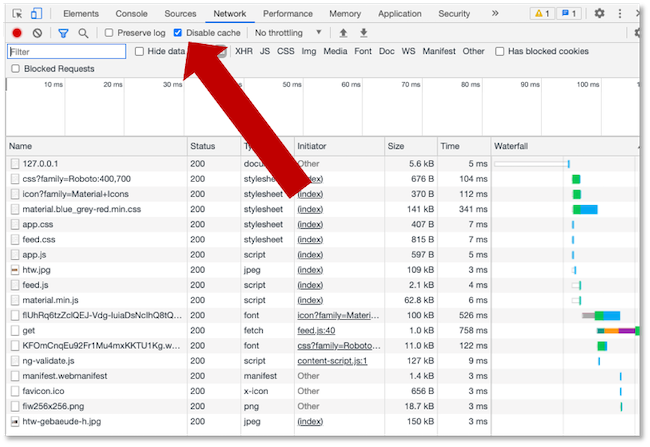
Was soll in den Cache?¶
Zunächst überlegen wir uns, was überhaupt in den Cache soll und was nicht. Prinzipiell verfolgen wir mit dem Service-Worker-Cache die Idee, dass die Anwendung auch offline verwendbar bleiben soll. Wenn wir unsere aktuelle Anwendung betrachten, dann können wir unterscheiden zwischen
- "statischen" und
- "dynamischen" Inhalten.
Statisch ist im Prinzip der Rahmen unserer Anwendung, also im prinzip alles, was wir hatten vor unserem ersten Blog-Eintrag. Dieser Rahmen gibt uns das Gefühl, dass die Anwendung "läuft" - es fehlen nur die dynamischen Inhalte, also die Blog-Einträge. Stattdessen könnte man aber eine Meldung ausgeben, dass diese Inhalte derzeit nicht verfügbar sind. Das wäre alles jedenfalls besser als eine 404-Seite oder ein unendliches Warten oder das hier:

Der Rahmen einer Webanwendung wird auch App-Shell genannt. Wir wollen diese App-Shell zunächst in unseren Service-Worker-Cache speichern.
Static caching/Precaching¶
Wir wollen zunächst die statischen Inhalte unserer Anwendung sin den Cache speichern. Dies geschieht beim Installieren (registrieren) des service workers. Das ist auch insofern praktisch, als dass der service worker ja nur dann neu registriert wird, wenn er geändert wurde. Ansonsten bleibt einfach der "alte" existent.
Ziel ist es also, zunächst alles das in den Cache zu speichern, was unsere Webanwendung ausmacht:
- die
index.html, - alle
*.css-Dateien, die mittels<link href="...">in dieserindex.htmleinegunden werden, - alle
*.js-Dateien, die mittels<script src="...">in dieserindex.htmleinegunden werden und - alle
*.png-Dateien, die mittels<link href="...">in dieserindex.htmleinegunden werden.
Den Service-Worker-Cache erstellen¶
Wir haben bereits eingangs festgelegt, dass wir den Cache in dem Moment anlegen wollen, in dem der service worker installiert wird. Das bedeutet, wir erstellen den Cache in der Ereignisbehandlung des Lebenszyklus-Event install des service workers, also hier (sw.js):
self.addEventListener('install', event => {
console.log('service worker --> installing ...', event);
// hier soll der Cache "entstehen"
})
Den Service-Worker-Cache erstellen wir mithilfe der Anweisung caches.open();. Hierbei handelt es sich um eine Funktion von CacheStorage. Die Funktion caches.open() erzeugt ein Cache-Objekt, wenn es noch nicht existiert. Die Rückgabe (response der Promise) ist also ein Cache-Objekt.
Man könnte nun annehmen, man schreibt einfach das hier:
1 2 3 4 | |
Diese Idee ist aber nicht so gut, da wir immer im Hinterkopf behalten müssen, dass in einem service worker alles asynchron abgearbeitet wird. Das bedeutet, dass wir in diesem Fall bei der Baehandlung des install-Events zwei Anweisungen einfach "antriggern": die Ausgabe auf die Konsole (Zeile 2) und das Erzeugen eines Cache-Objektes (Zeile 3). Wie lange jedes einzelne braucht und wann etwas fertig ist, wissen wir nicht. Das bedeutet z.B. dass die Ereignisbehandlung des install-Events fertig ist, noch bevor die Ausgabe auf die Konsole und/oder das Erzeugen des Cache-Objektes abgeschlossen ist/sind. Das wiederum würde bedeuten, dass wir asynchron evtl. bereits fetch-Anfragen auslösen, noch bevor der Cache bereit ist. Um dieses Problem zu verhindern, betten wir die Erzeugung des Cache-Objektes in eine event.waitUntil()-Funktion ein. Erst wenn diese Funktion abgeschlossen ist, ist auch die Ereignisbehandlung des install-Events abgeschlossen (siehe auch hier). Das richtige Vorgehen ist also dieses:
1 2 3 4 5 6 7 8 9 | |
caches.open() erzeugt also ein Promise, dessen response der erzeugte Cache ist. Wir konsumieren diesen Cache und geben zunächst nur eine Ausgabe auf der Konsole aus.
Der Parameter 'static' in caches.open() ist ein Name für den Cache. Die Namen sind frei wählbar und man kann verschiedene Namen vergeben. Das sind dann jeweils eine Art "Unter"-Caches (oder sub caches) im Service-Worker-Cache.
Eine Ressource in den Cache speichern¶
Nun kann der Cache entsprechend mit request-response-Schlüssel-Werte-Paaren befüllt werden. Die auf den Cache anwenbaren Funktionen sind hier dokumentiert. Es sind match(request, options), matchAll(request, options), add(request), , addAll(request), , put(request, response), delete(request, options) und , keys(request, options). Alle liefern natürlich ein Promise zurück.
Um die statischen Inhalte unserer Webanwendung in den Cache zu laden, verwenden wir die add(request)-Funktion. Diese Funktion macht folgendes:
- sie führt den
requestaus (fetch(request)) und - speichert die
response(also die angefragte Ressource) → dieses Speichern entspricht einemput(request, response)im Cache.
Wenn wir also folgendes implementieren:
1 2 3 4 5 6 7 8 9 10 | |
, dann wird beim Initialisieren des service workers die Ressource public/src/js/app.js beim Webserver angefragt und die response, also die app.js im Cache gespeichert. Wenn wir unsere Anwednung so ausführen, dann sehen wir in den DeveloperTools im Reiter Application im Cache Storage den Cache static und darin die gespeicherte Ressource /src/js/app.js.
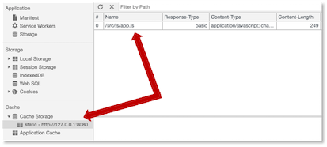
Eine Ressource aus dem Cache lesen¶
Jetzt haben wir einen Ressource in den Cache geladen, aber wir verwenden sie noch nicht, da wir in der bisherigen Behandlung des fetch-Events den Cache noch nicht nutzen. Zur Erinnerung: bei der Behandlung des fetch-Events wirkt der service worker wie ein Proxy. Er "schaltet" sich zwischen die Webanwendung und die Anfrage dieser an den Webserver. In unserer derzeitigen Implementierung des fetch-Events wird der request einfach an den Webserver durchgeschleust, ohne irgendetwas damit zu tun. Das wollen wir nun ändern:
1 2 3 4 5 6 7 8 9 10 11 12 | |
Wir reagieren auf das fetch-Ereignis zunächst mit der respondWith()-Funktion, die wir bereits oben besprochen haben. Diese Funktion verhindert die Ausführung des Standardverhaltens beim fetch, nämlich die Anfrage an den Webserver. Stattdessen fragen wir mithilfe der caches.match()-Funktion alle sub caches unseres Caches nach dem als Parameter übergebenen request an. Im Cache sind die Einträge als Schlüssel-Werte-Paare request-response abgespeichert. Findet sich der request im Cache, dann liefert die Promise ein response-Objekt zurück. Wenn das so ist (Zeile 5), dann geben wir dieses response-Objekt an die Webanwendung zurück (Zeile 6). Das ist dann also die aus dem Cache geladene Ressource.
Wenn die match()-Funktion jedoch den Schlüssel request nicht im Cache gefunden hat (und somit auch keine response), gibt sie zwar trotzdem ein Promise zurück, aber dann ist die response null. Das bedeutet, dass die if-Abfrage in Zeile 5 ein false zurückgibt und wir somit Zeile 8 ausführen. Darin wird die Anfrage einfach an den Webserver weitergeleitet, die Ressource also vom Webserver geladen.
Wir überprüfen die Funktionalität dieser fetch-Ereignisbehandlung:
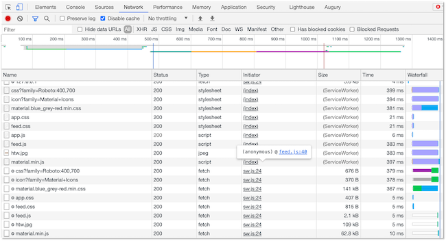
Unter dem Reiter Network in den DeveloperTools sehen wir, dass die app.js durch den Service Worker geladen wurde. Alle anderen Ressourcen wurden auch durch den Service Worker geladen, das liegt daran, dass wir im Service Worker die Anfrage an den Webserver durch den Service Worker durchschleusen. Wichtig ist aber, dass die app.js nicht vom Webserver geladen wurde. Das erkennen war daran, dass alle anderen Ressourcen mit ihren Größenangaben in der Tabelle stehen und dass damit gesagt, wurde, wieviel Bytes vom Webserver geladen wurden. Die app.js taucht dabei aber nicht auf. Sie wurde durch den Service Worker aus dem Service-Worker-Cache (Cache Storage) geladen!
Okay, das ist jetzt vielleicht noch nicht besonders eindrucksvoll, weil der Offline-Modus für unsere Webanwendung noch nicht funktioniert und wir bis jetzt nur die app.js in den Cache speichern und von dort bei einem fetch() laden. Dadurch sieht man noch nicht wirklich viel. Deshalb laden wir jetzt den statischen "Rest", insbesondere die index.html und die dazugehörigen *.css-Dateien. Zuvor jedoch noch eine kurze Anmerkung zu den Schlüssel-Werte-Paaren request und response im Cache:
Schlüssel-Werte-Paare request und response¶
Wir laden jetzt unsere index.html-Datei in den Cache:
1 2 3 4 5 6 7 8 9 10 11 | |
Wenn wir unsere Anwendung neu starten und den service worker erneut registrieren, dann sollte jetzt die index.html im Offline-Modus angezeigt werden (wenn auch ohne die CSS-Styles). Allerdings sieht die Anwendung nach dem Reload im Offline-Modus leider so aus wie auf der linken Seite der folgenden Abbildung gezeigt:
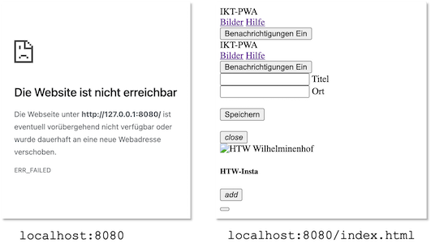
Der Grund dafür ist, dass wir die Anwendung mit localhost:8080 (oder 127.0.0.1:8080) aufrufen, der request also / ist. Im Cache gespeichert haben wir aber den request /index.html. Und tatsächlich, wenn wir localhost:8080/index.html (oder 127.0.0.1:8080/index.html) aufrufen, dann wird der request /index.html im Cache gefunden und als response die index.html zurückgegeben (rechte Seite in der Abbildung). Wichtig ist also, dass wir bedenken, dass alle requests, für die wir responses im Cache hinterlegen wollen, auch tatsächlich in den Cache hinzugefügt werden. Unsere sw.js sollte also auch so aussehen:
1 2 3 4 5 6 7 8 9 10 11 12 | |
Dann erhalten wir auch das rechte Bild der Abbildung beim Aufruf von localhost:8080 (oder 127.0.0.1:8080) im Offline-Modus. Wir sollten also beachten, dass alle requests, die wir cachen wollen, auch tatsächlich in den Cache gespeichert werden.
Alle statischen Ressourcen in den Cache laden¶
Wir laden jetzt alle statischen Ressourcen in den Cache, d.h. alles, was notwendig ist, um unsere Webanwendung auch im Offline-Modus so aussehen zu lassen, als würde sie "laufen". Dazu gehört natürlich die index.html und dann noch alle Ressourcen, die in der index.html eingebunden werden, also einige *.js-Dateien, einige *.css-Dateien und das Bild, das oben in der Webanwendung erscheint.
Man könnte das alles mit einzelnen cache.add()-Funktionen erledigen, so wie oben. Dafür gibt es aber auch die cache.addAll()-Funktion, der ein Array aus lauter requests übergeben wird. Die Implementierung der install-Ereignisbehandlung in unserer sw.js sieht dann so aus:
1 2 3 4 5 6 7 8 9 10 11 12 13 14 15 16 17 18 19 20 21 22 | |
Wenn wir nun unsere Anwendung neu starten und darauf achten, dass der neue Service Worker auch wirklich registriert wird und dann in den Offline-Modus schalten, dann sieht unsere Anwendung so aus:
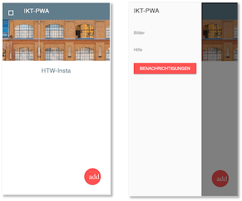
Wie auf der rechten Seite der Abbildung zu sehen ist, funktioniert auch das JavaScript, um zum Formular zu gelangen. Einige Sachen funktionieren im Offline-Modus nicht, weil wir sie nicht in den Cache geladen haben:
- die Hilfeseite (
/help/index.htmlund die dazugehörigehelp.css) sowie - den Blogeintrag, den wir bereits (statisch) vorgenommen haben (den binden wir gleich noch dynamisch ein).
Eine andere Sache fällt aber vielleicht auf: die Icons von Material Design Lite erscheinen nicht, d.h. das Menü links oben ist nur ein leeres Quadrat und auf dem roten runden Button fehlt das Plus, stattdessen steht dort add.
Wenn wir diesem Problem nachgehen, dann sehen wir in den DeveloperTools unter dem Reiter Network, dass alle Ressourcen, die wir im Cache gespeichert haben, auch tatsächlich aus diesem Cache geladen werden:
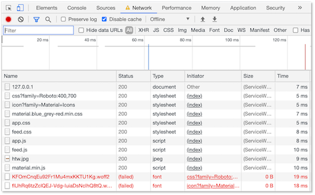
Zusätzlich schlagen aber noch "kryptische" GET-Anfragen fehl (die roten ganz unten in der Abbildung). Hier werden offensichtlich noch Anfragen an den Webserver gestellt, von denen wir gar nichts wussten und die wir nicht im Cache vorhalten. Wo kommen diese Anfragen her? Wenn wir dort in den DeveloperTools bspw. auf die Ressource https://fonts.googleapis.com/icon?family=Material+Icons klicken, dann erscheint daneben der Inhalt der geladenen Ressource und wir finden darin einen weiteren request, den wir aber nicht in unserem Cache hinterlegt haben (weil wir es gar nicht wussten):
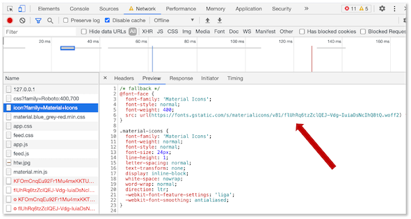
Diese Anfragen schlagen im Offline-Modus (natürlich) fehl und deshalb fehlen uns die Material Design Icons. Gut wäre es, wenn solche dynamischen Anfragen ebenfalls im Cache landen würden. Mit diesem dynamischen Caching beschäftigen wir uns deshalb jetzt:
Dynamisches Caching¶
Bis jetzt haben wir mit cache.add() bzw. cache.addAll() vorab festgelegt, was in den Cache geladen werden soll. Das wird statisches Caching oder pre-caching genannt. Jetzt kümmern wir uns um sogenanntes dynamisches Caching. Manchmal möchte man gar nicht schon gleich zu Beginn alles in den Cache laden, um die "Installation", das erstmalige Aufrufen der Seite nicht zu aufwändig und somit zu langsam zu gestalten. Manchmal kennt man aber auch gar nicht die Ressourcen, die man noch zum Cache hinzufügen möchte, wie das obere Beispiel gezeigt hat, als wir die Material Icons nicht in den Cache geladen haben, weil wir diese Anfrage vorab gar nicht kannten.
Die Behandlung des fetch-Events erweitern¶
Wir schauen uns zunächst nochmal die aktuelle Behandlung des fetch-Events im service worker an:
1 2 3 4 5 6 7 8 9 10 11 12 | |
Zur Erinnerung: mit dieser behandlung schalten wir uns zwischen die Abfrage der Webseite an den Webserver. Diese Behandlung wirkt wie ein Proxy. Bei jeder Anfrage der Webseite an den Webserver wird diese Implementierung des fetch-Events aufgerufen. Wir erwidern den request mit einer response.
Entweder kommt diese response aus dem Cache, nämlich dann, wenn caches.match(event.request) eine response zurückgibt. In diesem Fall wird die response zurück an die Webseite geschickt und der Webserver wird gar nicht mehr weiter angefragt.
Oder wir leiten die Anfrage tatsächlich an den Webserver weiter (return fetch(event.request);), nämlich dann, wenn der event.request nicht als Schlüssel im Cache verfügbar ist und dieser deshalb keine response zurückgibt. An dieser Stelle fügen wir nun unser dynamisches Caching ein. Der Webserver wird mit einer response antworten und wir werden diese response in unseren Cache laden.
Dazu benötigen wir zwei Dinge:
- einen neuen, weiteren Cache, in dem wir den entsprechenden
requestund dieresponsedes Webservers speichern und - die
cache.put()-Anweisung.put()unterscheidet sich vonadd()dahingehend, dassadd()nur einen Parameter benötigt, nämlich denrequestund dieresponseautomatisch als ein Schlüssel-Werte-Paar (request, response) speichert, währendput()beide Werte als Schlüssel-Werte-Paar speichert, d.h. zwei Parameter erwartet (request,response).
Ein erster Implementierungsversuch sieht so aus:
7 8 9 10 11 12 13 14 15 | |
Die Zeilen 9-14 sind hinzugekommen. Die fetch()-Anweisung ist ein Promise, deshalb fügen wir ein .then() an. Die response müssen wir jetzt anders nennen, da es die Variable response ja bereits gibt und es jetzt um die response des Webservers geht, also nennen wir sie res (kann natürlich auch anders heißen). Dann öffnen wir einen neuen Cache, den wir dynamic nennen - kann auch anders heißen. Wenn der Cache noch nicht existiert, wird er durch open() erstellt. open() ist wiederum ein Promise, so dass wir .then() anknüpfen können und fügen in den Cache mithilfe von put() das Schlüssel-Werte-Paar (event.request.url, res) ein.
Das wäre schon fast korrekt, aber es fehlt noch, dass wir die Response res natürlich an die Webseite zurückgeben wollen. Dazu fügen wir einerseits return res; ein, müssen aber auch dafür sorgen, dass die res auch an den fetch()-Aufruf zurückgegeben wird. Dehalb benötigen wir auch vor caches.open() noch ein return.
Außerdem müssen wir noch einen weiteren Aspekt beachten. Wenn eine Response verwendet wird, wird sie konsumiert, d.h. verbraucht. Das ist so für Responses, auch wenn es nicht so wirklich nachvollziehbar und verständlich ist. Wir verwenden in unserem Code zwei Mal res, einmal um es in den Cache zu speichern und ein anderes Mal, um es an die Webseite zurückzugeben. In einer der beiden Verwendungen würde unsere res verbraucht/konsumiert werden und das andere Mal wäre sie leer. Kein Ahnung, warum das so ist ;-) . Aber wir benötigen an einer der beiden Stellen ein res.clone(), um den Clone der Response zu verwenden und die Response nicht zu "verbrauchen". Wir speichern den Clone der Response in den Cache (wir könnten auch die res in den Cache speichern und res.clone() zurückgeben).
Die gesamte Implementierung sieht dann so aus:
1 2 3 4 5 6 7 8 9 10 11 12 13 14 15 16 17 18 19 | |
Wenn wir nun die Anwendung ausführen ( npm start), dann in den Offline-Modus gehen und ein Reload im Browser durchführen, sehen wir, dass die Material-Icons nun auch im Offline-Modus vorhanden sind:
Wenn wir uns in den DeveloperTools unter Application auf der linken Seite unter Cache den Cache Storage anschauen, dann sehen wir, dass dort nun 2 Caches sind, der static und der dynamic Cache.
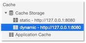
In dem dynmic Cache finden wir nun auch die Material Icons wieder
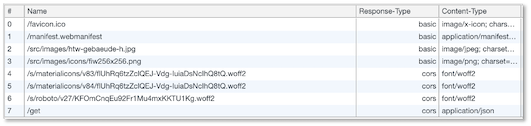
und unter dem Network-Reiter gibt es auch keine "Fehler" mehr, sondern alle Ressourcen werden vom Service Worker aus dem Cache geladen:
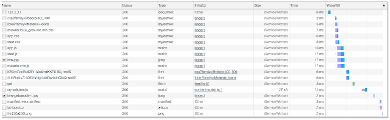
Als weiteres Zeichen, dass nun alle Inhalte dynamisch geladen werden, erkennen wir auch die "Mensa-Card" in unserer Anwendung im Offline-Modus. Diese hatten wir ja statisch nicht hinzugefügt. Probieren Sie auch einmal die "Hilfe-Seite" der Anwendung aus. Im Offline-Modus ist sie noch nicht verfügbar. Wenn wir aber wieder online gehen, die "Hilfe-Seite" aufrufen und dann wieder offline gehen, ist die Hilfe-Seite im Cache und wird angezeigt.
chrome.webRequest-API¶
Der Chromium-Browser hat eine eigene API für Requests und schaltet sich bei Anfragen selbst dazwischen, um den Traffic zu analysieren und eventuelle Anfragen zu blockieren. Auch diese Anfragen lösen ein fetch-Event aus. Allerdings gibt es bei von Chromium ausgelösten Requests in dem request keine url-Eigenschaft. Vielleicht haben Sie einen solchen Fehler auch in Ihren DeveloperTools entdeckt. Eine Chromium-Anfrage unterscheidet sich von einer "normalen" Anfrage der Webseite an den Webserver dadurch, dass in einer "normalen" Anfrage die angefragte Ressource unter "htttp://...", also unter einer URL verfügbar ist. Um nun den fehlerhaften Zugriff auf die url-Eigenschaft von request bei einer Anfrage durch Chrome zu vermeiden, fügen wir ganz am Anfang der Ereignisbehandlung des fetch-Events noch die Abfrage ein, ob der request das Wort "http" enthält. Wenn nicht, verlassen wir die Behandlung des Events einfach:
1 2 3 4 5 6 7 8 9 10 11 12 13 14 15 16 17 18 19 20 21 22 23 | |
Versionierung von Caches¶
Wir haben nun sowohl statisch als auch dynamisch Ressourcen unserer Webanwendung geladen. Wenn wir eine Weile auf unserer Anwendung navigieren, laden wir nach und nach alle Ressourcen in den Cache, die unsere Anwendung ausmachen. Irgendwann können wir sie komplett offline betreiben. Alle Ressourcen sind im Cache und keine Ressourcen werden mehr vom Webserver geladen.
Was passiert aber, wenn wir etwas ändern? Wenn wir den Service worker sw.js ändern, dann können wir dafür sorgen, dass er neu geladen wird. Der Service worker darf auch niemals in den Cache geladen werden, denn dann hätten wir eine unendliche Schleife, die immer wieder Ressourcen in den Cache lädt! Wenn wir irgendeine andere Datei, eine *.html-, *.css- oder *.js-Datei ändern, dann wird diese nie mehr in ihrer aktuellen Version vom Webserver geladen, da sie ja bereits im Cache ist und deshalb immer (in ihrer alten Version) aus dem Cache geladen wird. Um dieses problem zu beheben, versionieren wir unsere Caches.
Neue Cache-Versionen erstellen¶
Eine neue "Version" eines Caches erstellen wir dadurch, dass wir einen neuen Cache mit anderem Namen erstellen. Unsere beiden Caches (der statische und der dynamische) werden jeweils im Service Worker (sw.js) benannt:
1 2 3 4 5 6 7 8 9 10 11 12 13 14 15 16 17 18 19 20 21 22 23 24 25 26 27 28 29 30 31 32 33 34 35 36 37 38 39 40 41 42 43 44 45 46 47 48 49 50 51 | |
Mit wechselndem Namen wechseln wir auch die "Version" des Caches. Wenn wir die Implementierung des statischen Service Workers (mit dem dynamischen ist es gleich, wir zeigen es hier zunächst nur für den statischen) in der Zeile 4 bespielsweise auf
caches.open('static-v1')
ändern, ensteht ein neuer zusätzlicher Caches static-v1. Mit solchen "Versionierungen" erreichen wir, dass der Service Worker neu ausgeführt und somit wirksam wird. Geänderte Dateien gelangen so neu in diesen neuen Caches.
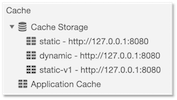
Leider bleiben aber auch die alten Caches noch bestehen und die Funktion caches.match() sucht in allen Caches nach dem passenden Request. Die Änderungen wären dann also trotzdem noch nicht sichtbar. Wir müssen jetzt noch dafür sorgen, dass die "alten" Caches gelöscht werden.
Um uns zu überlegen, an welcher Stelle ein geeigneter Platz wäre, die alten Caches zu löschen, hier nochmal eine kurze Wiederholung des Service-Worker-Lifecycles:
- install: Das
install-Ereignis ist das erste Ereignis, das ein Service Worker auslöst. Es wird genau einmal ausgelöst. Die Promise ininstallEvent.waitUntil()gibt Auskunft darüber, ob das Installieren des Service Workers erfolgreich war oder nicht. So lange der Service Worker installiert wird, kann er keinefetch-Ereignisse empfangen und behandeln. - activate: Sobald die Installation erfolgreich abgeschlossen ist, wird das
activate-Ereignis ausgelöst. - waiting: Wenn ein Service Worker
activatedist, d.h. dasactivate-Event für diesen Service Worker ausgelöst wurde, kontrolliert er die Anfragen der Webseite (insb. wennclients.claim()ausgeführt wurde, was dazu führt, dass auch alle Unterseiten der Seite "kontrolliert" werden). Wird der Service Worker geändert (aktualisiert) und erneut installiert, kann der geänderte Service Worker nicht sofort in denactivatedZustand übergehen, so lange ein anderer Service Workeractiveist. Der aktualisierte Service Worker ist dannwaiting.
Das Bild zeigt einen aktualisierten Service Worker (#877) waiting solange der Service Worker #875 noch activated ist. Erst, wenn skipWaiting geklickt wird (self.skipWaiting()), wird der aktualisierte Service Worker activated.
Ein guter Punkt, existierende Caches zu löschen, die man nicht mehr verwenden möchte, ist, wenn ein (neuer/aktualisierter) Service Worker activated ist. Wir erweitern also die behandlung des activate-Ereignisses:
1 2 3 4 5 6 7 8 9 10 11 12 13 14 15 | |
Die ersten beiden und die letzten beiden Zeilen hatten wir bereits. Zeilen 3-13 sind neu. Betrachten wir den Code genauer:
- Die Funktion
waitUntil()(Zeile4) gibt es sowohl für dasinstall-Event als auch für dasactivate-Ereignis. Dieser Funktion wird ein Promise übergeben. Wir übergeben als Promise die Funktioncaches.keys()(Zeile5). caches.keysgibt alle Namen der Service-Worker-Caches als Schlüssel zurück. In unserem Fall alsostatic,static-v1unddynamic.- die Funktion
Promise.all()wird, verwendet, wenn auf ein Array von Promises "gewartet" werden soll. Die Funktion ist also dann beendet, wenn alle Promises des Arrays beendet sind. Promise.all()wartet auf ein Array von Promises. Wir haben aber mitkeyList"nur" ein Array von Strings (die Namen der Caches). Mithilfe dermap()-Funktion wandeln wir dieses Array von Strings in ein Array von Promises um.- die
map-Funktion nimmt nun jeden einzelnen String aus dem ArraykeyListund "macht" damit etwas (Zeilen7-10) - es wird geprüft, ob der
keyentweder dem dynamischen Cache entspricht ('dynamic') oder dem neuen statischen Cache ('static-v1'). Wenn das nicht der Fall ist, dann wird der Cache mit dem Namenkeygelöscht (Zeile9). return caches.delete(key)gibt somit ein Promise zurück (an diemap-Funktion). Somit wird jeder Schlüssel aus derkeyListin ein Promise umgewandelt (fürstatic-v1unddynamicwirdnullzurückgegeben).- wenn alle dieses Promises beendet sind, ist auch die
Promise.all()-Funktion beendet und somit auch dieevent.waitUntil()-Funktion.
Somit löschen wir alle "alten" statischen Caches und behalten nur die Caches static-v1 und dynamic.
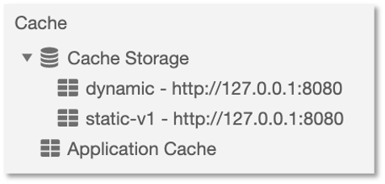
Wenn wir also etwas in unseren *.html, *.css und/oder *.js-Dateien ändern und das Geänderte wirksam werden lassen wollen, ändern wir einfach die Namen der Caches im Service Worker und sobald der Service Worker aktiviert ist, existieren nur noch die neuen Caches und die alten sind gelöscht. Damit wir das an zentraler Stelle im sw.js machen, lagern wir die aktuellen Namen der Caches in Konstanten aus. Die vollständige Implementierung unseres Service Workers sieht so aus:
1 2 3 4 5 6 7 8 9 10 11 12 13 14 15 16 17 18 19 20 21 22 23 24 25 26 27 28 29 30 31 32 33 34 35 36 37 38 39 40 41 42 43 44 45 46 47 48 49 50 51 52 53 54 55 56 57 58 59 60 61 62 63 64 65 | |
Zusammenfassung¶
Die Zusammanfassung für das Caching kann man im folgenden Bild darstellen.
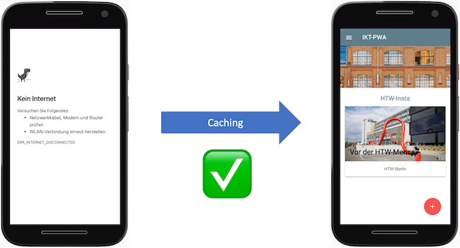
Mithilfe des Caching haben wir es geschafft, dass unsere Anwendung im Offline-Modus nicht mehr so aussieht, wie links, sondern wie rechts. Toll!
Noch einige nützliche Links: